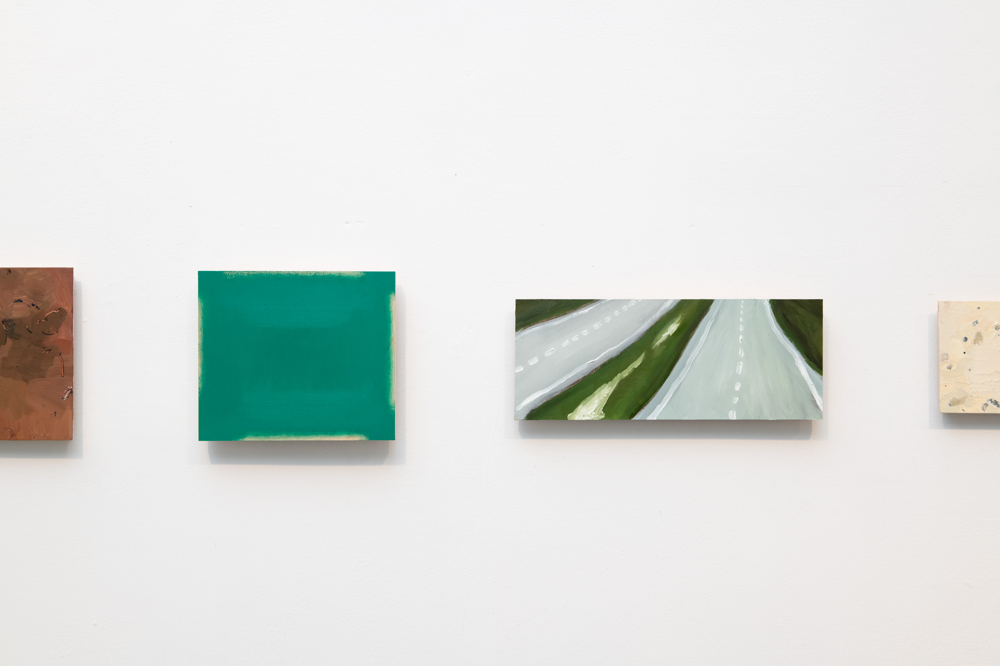
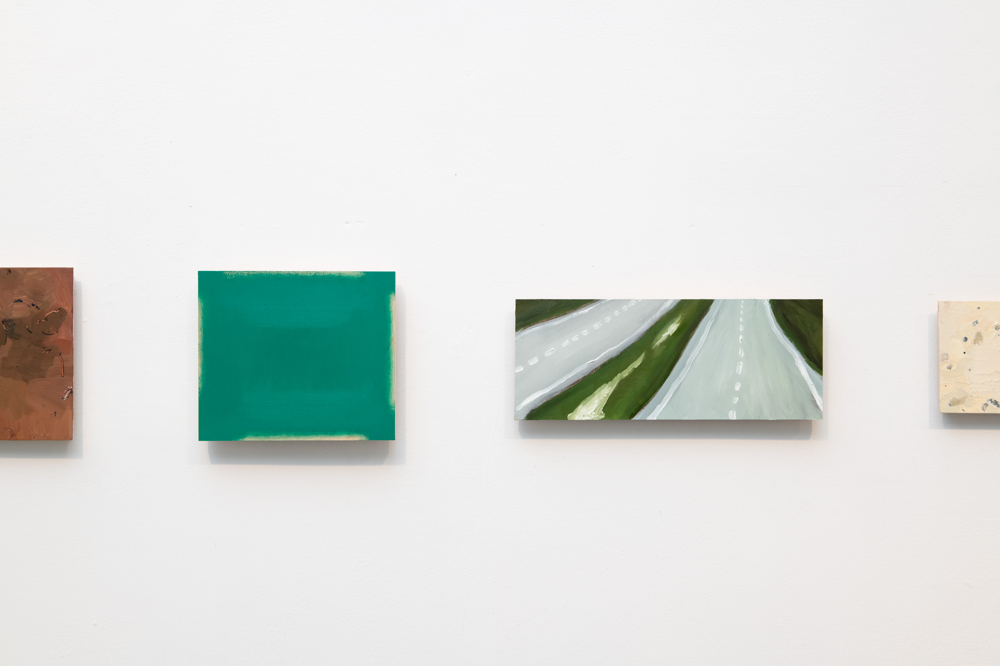

The weight of stones / the way in which winter / pushes up / these stones from the earth, / in fields / perpetually cleared

Stones, "fields," street signs, bricks, and textual remnants animate these paintings. In New England, colonial practices have scarred the land in ways integrated and obscured by the romantic American visual regime. Fieldstone walls, for example, are a byproduct of colonial agriculture and property law. When colonists encroached on native land and cleared fields for English-style agriculture and settlement, stone walls accumulated at their margins. Each winter, water penetrated the loosened earth and froze, heaving new stones to the surface, so that the fields needed to be cleared perpetually.


 
